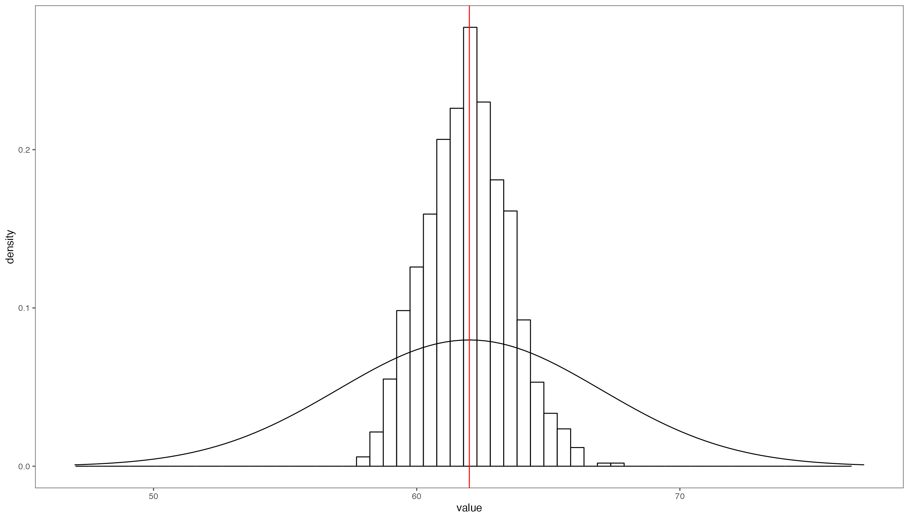
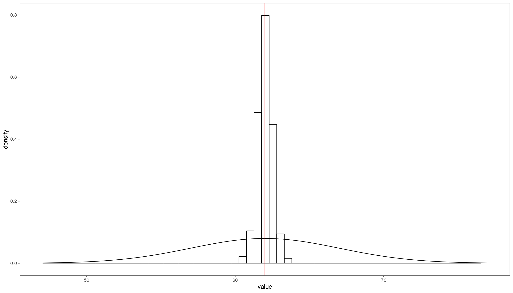
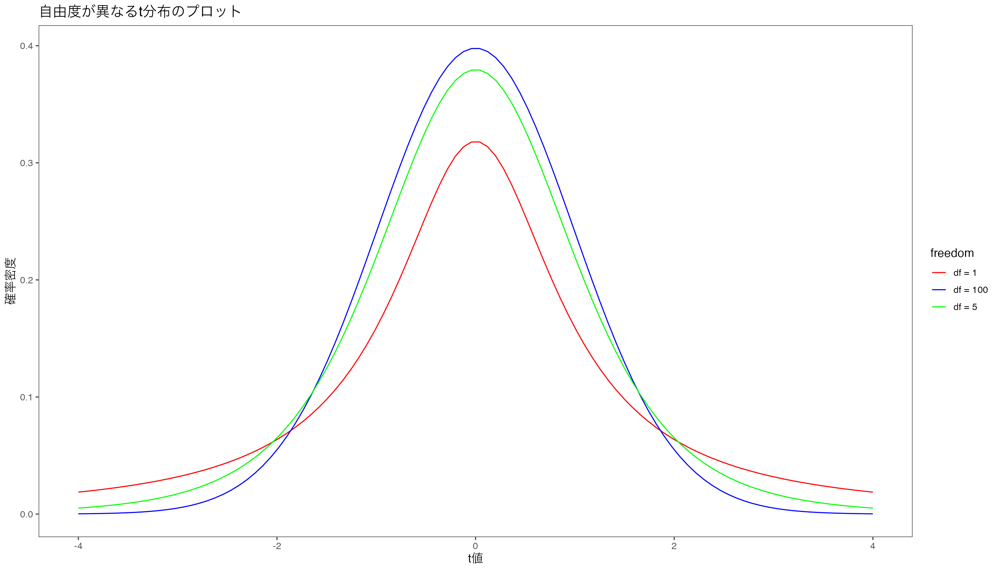
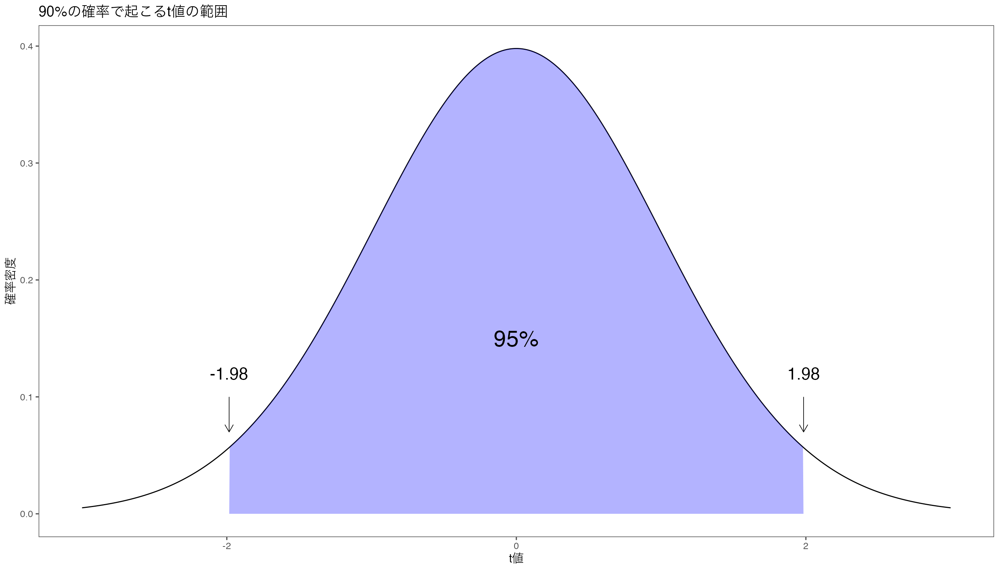
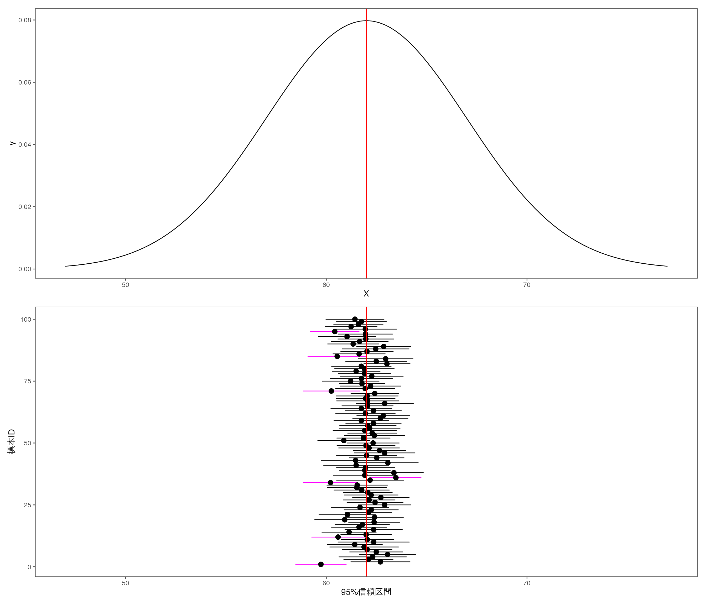
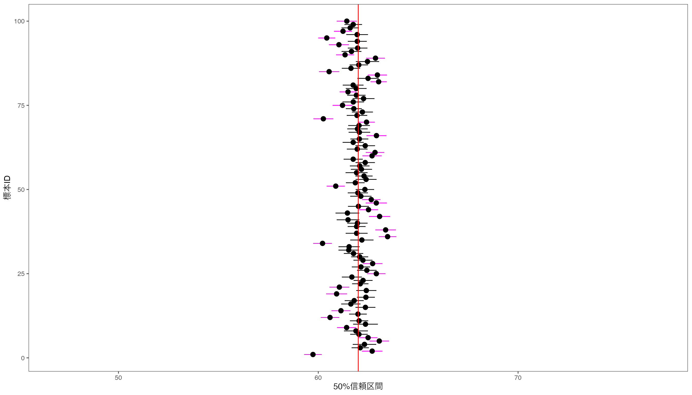
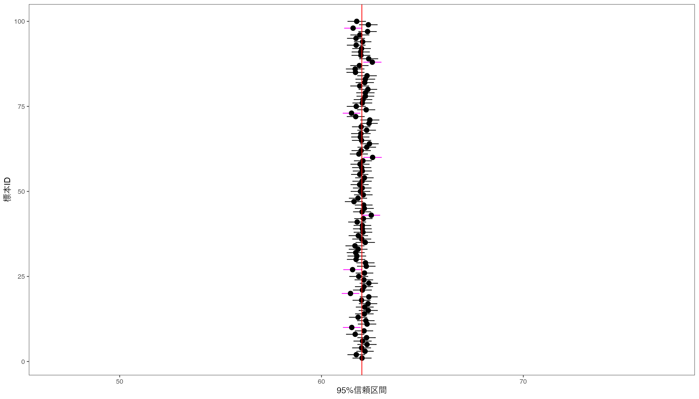
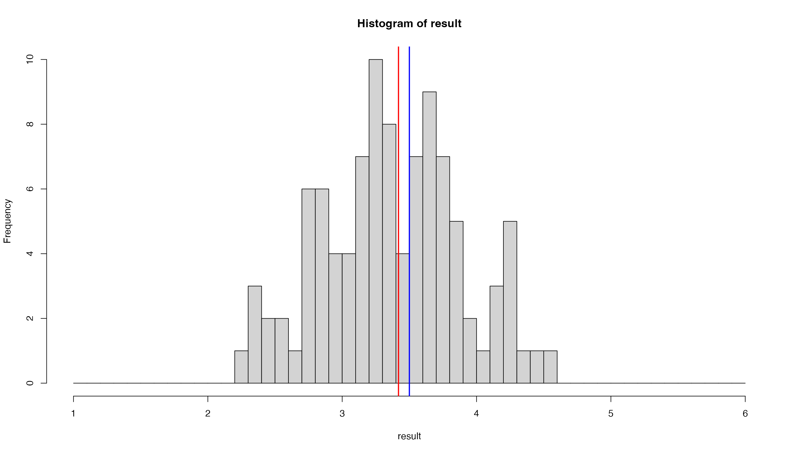

# 文字化け防止のおまじない、R 4.1.0以降
knitr::opts_chunk$set(dev = "ragg_png")
library(tidyverse) # とりあえずこれ
library(ggthemes) # ggplot2のテーマ
library(knitr)
library(kableExtra)
library(gghighlight)
# テーマを設定
theme_set(theme_few(base_size = 12))
# 以下、ggplot2のデフォルトを変更
update_geom_defaults("point", list(size = 3))プレゼミ2023 第6回 統計的推定
統計的推定
第6回講義の到達目標
- 母集団と標本の違いを理解する。
- 不偏推定量と一致推定量を理解し，説明することができる。
- 信頼区間を理解し，説明することが出来る。
第6回講義の到達度検証のための課題
- 標本を構築し，記述統計量を計算する。
- シミュレーションを利用して，統計量を作る事が出来る。
- 信頼区間を計算することができる
用語の意味
- 母集団：研究対象となるすべての集合
- 標本：母集団から抽出されたデータ
- 標本サイズ：標本に含まれるデータの個数
- 標本数・サンプル数：標本の数のことで標本サイズのことじゃないよ
- 母数：母集団を特徴付ける値、母平均や母分散など
- 統計量：標本を特徴付ける値、標本平均や標本分散など
- 推定量：母数の推定に使われる統計量
- 統計的推定：推定量から母数を予想すること
準備
母集団と標本
母集団(population)とは、研究問題(research question)に基づいて選定された対象全体の集まりのこと。
標本(sample)とは、母集団から一部を抜き出したものであり、標本を通じて母集団の特性を推定する。
統計学とは、限られた標本から母集団の特性（母数またはパラメータ）をどのように探求するかについて研究する学問
統計的推定・統計量・推定量
- 標本の特徴を調べることで，観察できない母集団の母数(parameter)を推定することを，統計的推定(statistical estimation)
- 統計的推定には，標本から計算される統計量(statistic)を用いる。
- 母数の推定のために利用される統計量を推定量(estimator)という。
- 母数は定数だが、標本が変われば値が変わるので推定量は確率変数である。
数学記号の使い方
母数を推定するために用いられる統計量と一般的な数式記号
| 母数 | 記号 | 統計量 | 記号 |
|---|---|---|---|
| 母平均 | \(\mu\) | 標本平均 | \(\bar x\) |
| 母比率 | \(\pi\) | 標本比率 | \(p\) |
| 母分散 | \(\sigma^2\) | 標本分散 | \(s^2\) |
| 母標準偏差 | \(\sigma\) | 標本標準偏差 | \(s\) |
標本抽出の方法
- 母集団から標本を選ぶ標本抽出方法として代表的なものが，単純無作為抽出(simple randome sampling)
- 単純無作為抽出で選ばれた標本は、母集団の偏りのない標本となる。
- このような標本を無作為標本(random sample)といい、この標本から計算される統計量は優れた特徴をもつ。
シミュレーションで確認してみる。
標本抽出のシミュレーション準備
平均10，標準偏差1の正規分布に従う確率変数\(X \sim N(10,1)\)を考える。 この確率変数\(X\)の実現値100個を標本として抽出し、平均値を計算する。 rnorm()関数は正規分布に従う乱数を発生させる関数であり、引数として
-
n：発生させる乱数の個数 -
mean：平均 -
sd：標準偏差
の3つをとる。
標本抽出のシミュレーションの実践
rnorm(100,10,1)と書いてもよいが、後で変更するかもしれない変数は外で定義しておく。
[1] 10.01132平均値は10.011324で、母平均\(10\)と一致していない。 この差を誤差といい、母集団と標本のズレを意味する。
標本抽出のシミュレーションの実践
標本抽出のシミュレーションの実践
標本サイズ\(n\)を増やす
大数の法則
キレイな左右対称の釣り鐘型の分布になっている。 この標本平均の分布の平均値を計算してみる。
mean(result)[1] 10.00148とほぼ10と等しい。
このように，標本サイズを増やしていくと，標本平均の平均値は母平均に近づく，という法則を大数の法則(law of large numbers)
標本数が増えると母平均に近づく
本当に標本サイズが増えると標本平均の平均が母平均に近づくのかシミュレーションで確認してみる。
標本分布
プレゼミのメンバー25名から5名の標本を抽出する場合でも，
\[ {}_{25} \mathrm{C}_5 = \binom{25}{5} = \frac{25!}{5!(25-5)!} = 53130 \]
の組み合わせがある。 標本から計算した統計量は標本ごとに異なる値となる。 このような統計量の分布を標本分布(sampling distribution)という。
不偏推定量
- 「偏りのない」(unbiased)標本をたくさん集めることができれば，標本分布は母集団の分布に近づく
- 多くの標本から計算される統計量の平均が母数に一致する性質を不偏性(unbiasedness)
- 普遍性をもつ推定量を不偏推定量(unbiased estimator)という
不偏推定量を計算することが非常に重要
例題
5個のデータ(2,4,6,7,9)から3つ取り出して標本を作成する場合の組み合わせ \[ {}_{5} \mathrm{C}_3 = \binom{5}{3} = \frac{5!}{3!(5-3)!} = 10 \]
この10個の標本から計算される標本分散と標本平均を計算する。 定義は次のとおりである。
\[ \begin{aligned} \text{標本平均} &= \frac 1n \sum_{i=1}^n x_i & \text{標本分散} &= \frac 1n \sum_{i=1}^n \left (x_i - \bar{x} \right )^2 \end{aligned} \]
例題
標本平均と標本分散を計算する関数を作る。 自作関数を作るには，function()関数を使う。
実務的には分母が0になるケースを考慮する必要があるが省略
例題
x <- c(2,4,6,7,9) # 母集団とする。
meanp(x) # 母平均[1] 5.6 [,1] [,2] [,3] [,4] [,5] [,6] [,7] [,8] [,9] [,10]
[1,] 2 2 2 2 2 2 4 4 4 6
[2,] 4 4 4 6 6 7 6 6 7 7
[3,] 6 7 9 7 9 9 7 9 9 95個のデータから3つのデータを取り出して標本を作り，それぞれの標本から標本平均と標本分散を計算
例題
自作のmeanp()関数をapply関数で適用して10の標本平均を作り，sample_meanという変数に代入し，その平均を計算する。
sample_mean <- apply(res, 2, meanp) # apply関数でmeanp関数をresに適用
meanp(sample_mean) # 標本平均の平均は5.6[1] 5.6標本平均の平均5.6が母平均5.6に一致したので，標本平均は不偏推定量である。
例題
次に分散を計算してみましょう。
標本分散の平均4.8666667は母分散5.84より小さな値になった。つまり標本分散は不偏推定量ではない，ということ。
例題
- 自由度という概念が関係
- 自由度とは，標本から計算される統計量の値を決めるのに使える情報の数のこと
- 標本分散ではなく標本不偏分散を計算する。違いは，分母が\(n\)ではなく\(n-1\)になっていること。 \[ \text{標本不偏分散} = \frac{1}{n-1} \sum_{i=1}^n \left (x_i - \bar{x} \right )^2 \]
例題
Rの基本関数であるvar()は標本分散ではなく標本不偏分散を計算する。
var(x) # 母分散 5.84[1] 7.3res <- combn(x,3) # 3つのデータを取り出す組み合わせ
sample_var <- apply(res, 2, var)
meanp(sample_var) # 標本平均の平均は5.6[1] 7.3母分散と標本不偏分散の平均は一致した。 つまり母数である母分散を推定するためには，標本不偏分散を使う必要がある。
一致推定量
標本数が増えると，標本分布は母集団の分布に近づく，という特徴をもつ推定量を一致推定量(consistent estimator)という。
例えば，関心のある母集団が
- 母平均\(\mu = 62\)
- 母分散\(\sigma^2 = 25\)
という母数をもつ正規分布に従っているとする。
作図
正規分布の作図
Rコード
p <- ggplot(data = data.frame(X = c(47,77))) # データの作成
p <- p + aes(x = X)
p <- p + stat_function(
fun = dnorm,
args = list(mean = 62, sd = 5)
)
print(p)
母集団から標本サイズ10の標本を取り出し，標本平均を計算する，という試行を1000回繰り返し，1000個の標本平均を作る。
標本平均を計算
n = 10 # 標本サイズ
trial = 1000 # 試行回数
result <- numeric(trial) # 結果を入れる空の箱
for (i in 1:trial) { # 以下をtrial回繰り返す
x <- rnorm(n, 62, 5) # 標本を生成
result[i] <- mean(x) # 標本平均を計算
}
mean(result) # 標本平均の平均[1] 61.92884ヒストグラムの中心が母平均の62に近づいていることが分かります。 標本平均の平均は61.9288368となりますが，これは母平均62に近い値になっています。
グラフ
Rコード
result <- as.tibble(result)
g <- ggplot(result) + aes(value) # 軸の設定
g <- g + geom_histogram( # ヒストグラム
aes(y = ..density..), bins = 60, # y軸を密度に
fill = "white", color = "black") # ヒストグラムの色
g <- g + stat_function(fun=dnorm, args=list(mean = 62, sd = 5)) # 母集団の分布
g <- g + geom_vline(xintercept = 62, color = "red") # 母平均の縦線
g <- g + xlim(47,77) # x軸の範囲を指定
print(g)
母平均と標本平均の中心がほぼ一致している。 母分散と比べて標本分散が非常に小さい。
シミュレーション
標本サイズを先ほどの100倍の1000として，同じ試行を1000回繰り返す。
Rコード
n = 100 # 標本サイズ
trial = 1000 # 試行回数
result <- numeric(trial)
for (i in 1:trial) {
x <- rnorm(n, 62, 5)
result[i] <- mean(x)
}
result <- as.tibble(result)
g <- ggplot(result) + aes(value) + geom_histogram(aes(y=..density..), bins=60, fill="white", color="black")
g <- g + stat_function(fun=dnorm, args=list(mean = 62, sd = 5))
g <- g + xlim(47,77) + geom_vline(xintercept = 62, color="red")
print(g)
シミュレーション
どんどん標本サイズを増やして，100000として，同じ試行を1000回繰り返してみましょう。
Rコード
n = 100000 # 標本サイズ
trial = 1000 # 試行回数
result <- numeric(trial)
for (i in 1:trial) {
x <- rnorm(n, 62, 5)
result[i] <- mean(x)
}
result <- as.tibble(result)
g <- ggplot(result) + aes(value) + geom_histogram(aes(y=..density..), bins=60, fill="white", color="black")
g <- g + stat_function(fun=dnorm, args=list(mean = 62, sd = 5))
g <- g + xlim(47,77) + geom_vline(xintercept = 62, color="red")
print(g)
一致推定量
標本平均の標準偏差\(SD(\bar x)\)は，
\[ SD(\bar x) = \frac{\sigma}{\sqrt{n}} \]
標本サイズを大きくすると，標本平均が母平均の近くの値をとる確率が大きくなる，という性質を一致性(consistency)と呼び， 一致性をもつ推定量を一致推定量(consistent estimator)という。
母平均の推定と信頼区間
標本から得た統計量をつかって母数である母平均を予想したいとき，手元にある1つの標本から計算した標本平均は，どの程度の精度をもつのか？ これを測る尺度を信頼区間(confidence interval)という。
- 母数である母平均は観察できないが，確率変数ではなく定数
- この母平均が計算した信頼区間に含まれるか，含まれないか，のどちらか
- 信頼区間の正しい解釈は，母集団から標本を取ってきて、その標本平均から95%信頼区間を求める、という作業を100回やったときに、95回はその区間の中に母平均が含まれる
標本平均の標準偏差を推定
標本の統計量は分布し，標本平均の標準偏差は，
\[ SD(\bar x) = \frac{\sigma }{\sqrt{n}} \]
となる。標本サイズ\(n\)は既知だが，$$は母標準偏差なので未知である。 \(\sigma\)の推定のために，不偏標準偏差
\[ u = \sqrt{\frac{1}{n-1} \sum_{i=1}^n \left (x_i - \bar{x} \right )^2} \]
を計算する。
標準誤差
定義した\(SD(\bar x)\)の分子\(\sigma\)の代わりに推定量\(u\)を使ったものを標準誤差(standard error: SE)と呼ぶ。 \[ SE = \frac{u}{\sqrt{n}} \]
この標準誤差を標本平均の標準誤差の代わりに利用する。
t分布
\(t\)分布(t-distribution)は，母集団が正規分布にしたがうとき，標本平均の分布が従う確率分布です。
Rコード
x <- seq(-4, 4, length.out = 100)
df1 <- dt(x, df = 1)
df5 <- dt(x, df = 5)
df100 <- dt(x, df = 100)
# データフレームに変換
df <- data.frame(x = rep(x, 3),
y = c(df1, df5, df100),
freedom = factor(rep(c("df = 1", "df = 5", "df = 100"), each = length(x)), ordered = TRUE)
)
# プロット
ggplot(df, aes(x = x, y = y, color = freedom)) +
geom_line() +
scale_color_manual(values = c("red", "blue", "green")) +
labs(title = "自由度が異なるt分布のプロット") + xlab("t値") + ylab("確率密度")
t分布
標本平均\(\bar x\)から母平均を引いて，それを標準誤差\(SE\)で割った値をt値(t-value)という。 自由度99の\(t\)分布の場合，95%の確率で\(t\)値は-1.98から1.98の間に入ります。
Rコード
# 自由度を設定
df <- 99
# データを生成
data <- data.frame(x = seq(-5, 5, by = 0.01))
data$y <- dt(data$x, df)
# 90%の領域の上限と下限をqt()で計算
ql <- qt(0.025, df)
qu <- qt(0.975, df)
# t分布を書く
g <- ggplot(data) + aes(x=x, y=y) + geom_line()
g <- g + geom_area(data = data %>% filter(x > ql & x < qu), fill = "blue", alpha = 0.3)
g <- g + xlab("t値") + ylab("確率密度") + labs(title = "90%の確率で起こるt値の範囲") + xlim(-3,3)
g <- g + annotate(geom = "text", x = qu, y = 0.12,
label = "1.98", size = 6) +
annotate(# 始点や終点などを指定して矢印を追加
geom = "segment", x = qu, xend = qu,
y = 0.1, yend = 0.07, color = "black", size = 0.3,
arrow = arrow(length = unit(0.3, "cm"))
)
g <- g + annotate(geom = "text", x = 0, y = 0.15,
label = "95%", size = 8)
g <- g + annotate(geom = "text", x = ql, y = 0.12,
label = "-1.98", size = 6) +
annotate(# 始点や終点などを指定して矢印を追加
geom = "segment", x = ql, xend = ql,
y = 0.1, yend = 0.07, color = "black", size = 0.3,
arrow = arrow(length = unit(0.3, "cm"))
)
print(g)
t分布
\(t\)分布は確率分布ですので，面積は1となります。 青い領域が95％の確率で\(t\)値が入る範囲です。
\[ [ -t _{100-1, 0.025}, \ t_{100-1, 0.025}] \]
\(t\)分布表を使って，自由度99のときの\(t\)値を調べると，\(t_{100-1, 0.025} = 1.98\)となります。 Rだとqt()関数を使って計算できます。
信頼区間を求める
標本サイズ\(n\)の標本から計算される標本平均\(\bar x\)から計算される次の\(t\)値 \[ t = \frac{\bar x - \mu}{SE} \] が自由度\(n-1\)の\(t\)分布にしたがうことが知られている。
つまり，標本の95％の\(t\)値は，\(t_{n-1, 0.025}\)から\(t_{n-1, 0.975}\)の間に入る。 よって，
\[ -t _{n-1, 0.025} \leq \frac{\bar x - \mu}{SE} \leq t_{n-1, 0.025} \] 両辺に\(SE\)をかけると， \[ -t _{n-1, 0.025} \times SE \leq \bar{x} - \mu \leq t_{n-1, 0.025}\times SE \]
この区間を95％信頼区間といいます。
信頼区間の解釈
信頼区間とは、観察できない真の値である母数が存在し、その母集団から標本を抽出し、標本平均を計算するということを繰り返したときに、95%の標本平均の信頼区間の中に真の値である母平均が入っている、ということです。
先の例を使って、信頼区間を表現してみます。
- 母集団が平均62，標準偏差5の正規分布にしたがうとする。
- この母集団から標本サイズ50の標本を100個抽出して，標本平均と標本標準偏差を計算する。
信頼区間の解釈
Rコード
trial <- 100 # 標本数
n <- 50 # 標本サイズ
mu <- 62 # 母平均
sigma <- 5 # 母標準偏差
set.seed(1234) # 乱数を準備
# 標本ごとの統計量を収納する空のベクトルを作成
sample_mean <- numeric(trial) # 標本平均の入れ物
sample_sd <- numeric(trial) # 標本標準偏差の入れ物
uplimit <- numeric(trial) # 信頼区間の上限の入れ物
lowlimit <- numeric(trial) # 信頼区間の下限の入れ物
# 標本の数だけ，以下の計算を繰り返す
for (i in 1:trial) {
temp_sample <- rnorm(n, mu, sigma) # 標本を抽出
sample_mean[i] <- mean(temp_sample) # 標本平均を計算
sample_sd[i] <- sd(temp_sample) # 標本標準偏差を計算
}
# 信頼区間の計算
p <- .95 # 信頼水準の設定 (95%信頼区間)
alpha <- qt( (1 - p) / 2, df = n - 1, lower.tail=FALSE) # 限界値の計算
# 信頼区間の上限と下限の計算
uplimit <- sample_mean + alpha * sample_sd/sqrt(n) # 信頼区間上限
lowlimit <- sample_mean - alpha * sample_sd/sqrt(n) # 信頼区間下限
# 信頼区間の計算結果をデータフレームにまとめる
confidence_interval <- data.frame(
標本平均 = sample_mean,
上限 = uplimit,
下限 = lowlimit,
標本番号 = 1:trial
)
# Plot using ggplot2
g_ci <- ggplot(confidence_interval) +
aes(x = 標本番号, y = 標本平均)
# aes(x = reorder(標本番号, 標本平均), y = 標本平均)
g_ci <- g_ci + geom_errorbar( # 信頼区間を表す線を描く
aes(ymin = 下限, ymax = 上限,
color = (下限 <= 62 & 上限 >= 62)
), width = 0.2)
g_ci <- g_ci + scale_color_manual( # 色の設定
values = c("magenta", "black"),
guide = FALSE)
g_ci <- g_ci + geom_point(aes(y = 標本平均)) # 標本平均を点で表す
g_ci <- g_ci + geom_hline(yintercept = 62, color = "red") # 母平均を赤い線で表す
g_ci <- g_ci + xlab("標本ID") + ylab("95%信頼区間") # 軸ラベルの設定
g_ci <- g_ci + ylim(47,77) + coord_flip() # 軸の範囲と向きの設定
p <- ggplot(data.frame(X = c(47,77))) + aes(x = X) # 母集団を描く範囲
p <- p + stat_function(fun = dnorm, args = list(mean = 62, sd = 5)) # 正規分布を描く
p <- p + geom_vline(xintercept = 62, color="red") # 母平均を赤い線で表す
library(patchwork) # グラフを並べるためのパッケージ
p / g_ci # グラフを縦に並べる
信頼区間の解釈
本当は未知である母平均62，母標準偏差5の母集団から標本を100個取り出し，100個の標本平均と95%信頼区間を計算し，グラフにしています。 この100個の標本から計算した95％信頼区間に母平均62が含まれているかどうかを確認すると，7つの95％信頼区間に母平均が含まれていないことが分かります。\(7/100\)の割合で信頼区間に母平均が含まれていないので，信頼水準は\(1-7/100=0.93\)となります。
信頼区間の解釈
信頼区間を50%にするとどうなるでしょうか？ こうなります。
Rコード
# 信頼区間の計算
p <- .5 # 信頼水準の設定 (95%信頼区間)
alpha <- qt( (1 - p) / 2, df = n - 1, lower.tail=FALSE) # 限界値の計算
# 信頼区間の上限と下限の計算
uplimit <- sample_mean + alpha * sample_sd/sqrt(n)
lowlimit <- sample_mean - alpha * sample_sd/sqrt(n)
confidence_interval <- data.frame(
標本平均 = sample_mean,
上限 = uplimit,
下限 = lowlimit,
標本番号 = 1:trial
)
# Plot using ggplot2
g_ci2 <- ggplot(confidence_interval) +
aes(x = 標本番号, y = 標本平均) +
geom_errorbar(aes(ymin = 下限, ymax = 上限,
color = (下限 <= 62 & 上限 >= 62)), width = 0.2) +
scale_color_manual(values = c("magenta", "black"), guide = FALSE) +
geom_point(aes(y = 標本平均)) + ylim(47,77) +
geom_hline(yintercept = 62, color = "red") + xlab("標本ID") + ylab("50%信頼区間") + coord_flip()
print(g_ci2)
信頼区間が短くなり，母平均を含まない50%信頼区間が増えました。
信頼区間の解釈
標本サイズを大きくすればどうでしょうか。

標本サイズ\(n\)が大きくなると、信頼区間の上限と下限を計算するさいの\(\sqrt{n}\)が大きくなるため、信頼区間が短くなっていることがわかります。
練習問題
- サイコロを作ってください。
- サイコロを10回降って，出た結果の平均を計算してください。
- 2の作業を100回繰り返して，100個の標本平均を計算してください。
- 100個の標本平均のヒストグラムを作成してください。
解答
replicate()関数とsample()関数を使って標本平均を複数作成し，mean()で平均を計算する。
Rコード
# 自作関数 simulate_dice_toss
simulate_dice_toss <- function(toss = 10, trial = 100) {#引数はnで試行回数
# 初期設定
dice <- 1:6 # 1〜6の数値をdiceに代入
# replicateを使用してサイコロを投げ、平均を取得
result <- replicate(trial, mean(sample(dice, toss, replace = TRUE)))
# 結果のヒストグラムをプロット
hist(result, breaks = seq(1,6,0.10))
# サンプル平均と真の平均の垂直線をプロット
sample_mean <- mean(result)
true_mean <- sum(dice) / length(dice)
abline(v = sample_mean, col = "red", lwd = 2)
abline(v = true_mean, col = "blue", lwd = 2)
# 標本平均の平均と母平均の差を表示（指数表記を避ける）
mean_difference <- sample_mean - true_mean
cat("標本平均の平均と母平均の差は", format(mean_difference, scientific = FALSE), "\n")
# 元の出力オプションに戻す
options(scipen = 0)
}関数を使ってみる。
# 例として100回の試行で関数を実行
simulate_dice_toss(10, 100)
標本平均の平均と母平均の差は -0.081